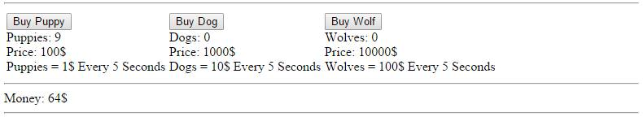
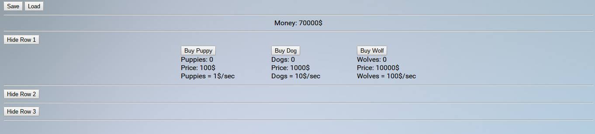

This one's my baby
Back when I first started trying to create something with a computer, I made a simple idle game with Unity game engine inspired by AdVenture Capitalist. A few months later, I decided to remake the game in HTML (which is why it's called Revival), and it left a lot of room for advancement and improvement.
At first, the first puppy was free, which started slowly making money, but differs from AdVenture Capitalist because in AdVenture Capitalist, without further upgrades, your income wasn't constant and automatic - it had to be clicked every couple seconds to reset the timer.
This was originally my intention, but later down the line I ended up choosing a different design.
I went crazy with making it aesthetically pleasing. I added tabs that could be opened and closed. I figured out how to save and load the game locally so you wouldn't lose your data when exiting the browser. I tried to make the page look great, and I made plans for the tabs to be used in the future for new upgrades and other features, but I couldn't felp but feel something was missing.
I went with something inspiried by Cookie Clicker. I added a  button in the middle of the page. Clicking on this put a dollar in your bank account for every click. The first puppy was no longer free - you had to earn the first puppy by clicking the to make enough money.
button in the middle of the page. Clicking on this put a dollar in your bank account for every click. The first puppy was no longer free - you had to earn the first puppy by clicking the to make enough money.
I still had a lot of tabs to use, and I spent a lot of time making the website look really good. I wanted the game mechanics to be more advanced than just clicking the in the middle, so I started to make plans for shelter, food, and water mechanics. These mechanics were partially inspired by CivClicker, and partially designed on my own. These mechanics were never finished. I also intended to have upgrades such as those that made the animals more effective or change the amount of money you'd receive for every click.
Unfortunately, this version of the game is now lost. In an attempt to streamline the code, I removed mostly all of the framework for the unused tabs and mechanics. That isn't to say it won't be added later. Although at the moment, this version of Dog Bribes is overshadowed in development by Dog Bribes: La Seconde Renaissance, I still consider them independent projects, and continue to work on both of them.
How to play
The object of the game is to click on the to make money, and use that money to buy different animals. Animals with make you a certain amount of money every second, depending on the animal. Buy as many animals as you can, and watch the cash flow in!